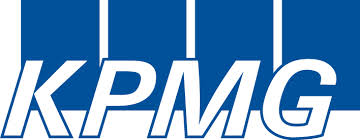
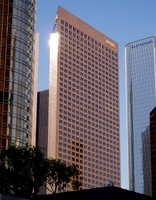

KPMG
KPMG is one of the largest professional services companies in the world and one of the Big Four auditors, along with Deloitte, Ernst & Young (EY) and PricewaterhouseCoopers (PwC). Its global headquarters is located in Amstelveen, the Netherlands.

KPMG employs 155,000 people and has three lines of services: audit, tax, and advisory. Its tax and advisory services are further divided into various service groups.
Each national KPMG firm is an independent legal entity and is a member of KPMG International Cooperative, a Swiss entity registered in the Swiss Canton of Zug. KPMG International changed its legal structure from a Swiss Verein to a co-operative under Swiss law in 2003.
This structure in which the Cooperative provides support services only to the member firms is similar to other professional services networks. The member firms provide the services to client. The purpose is to limit the liability of each independent member.
Michael Andrew, previously Chairman of KPMG in Australia, assumed the Global Chairmanship in September 2011 and is based in Hong Kong. This is the first time a Big Four accounting organisation has had its global leader based in Asia-Pacific. On February 28, 2014 it was announced that Michael Andrew was retiring as Chairman due to illness.
The US branch of KPMG was rated one of the top 10 companies for working mothers. It is also ranked No. 56 on Fortune Magazine's list of 100 Best Companies to Work For, voted for by employees.
KPMG was the preferred employer among the Big Four accounting firms according to CollegeGrad.com. It was also ranked No.4 on the list of "50 Best Places to Launch a Career" in 2009 according to BusinessWeek.
In 2008, KPMG in the UK was named the best big company to work for by The Times. This was the fourth consecutive year that KPMG has made the top three.
In 2009, in the UK, KPMG introduced a programme known as 'Flexible Futures'. This allowed staff to volunteer to give the firm the option to either send them on a sabbatical at 30% pay for up to 12 weeks, or to reduce their working hours to 4 days a week. The option remains open to the firm until October 2010. This facility has been invoked by the firm in some departments. KPMG publicised this as innovative and an alternative approach to redundancies. Reaction within the firm was generally positive, with over 75% of staff volunteering. However, over 100 staff had been made redundant prior to this announcement, leading some to accuse KPMG of being hypocritical in the message that they were given.
In October 2010, for the eighth year in a row, KPMG was named one of "Canada's Top 100 Employers" by Mediacorp Canada Inc., and was featured in Maclean's newsmagazine. In November 2010, KPMG was also named one of Greater Toronto's Top Employers, which was announced by the Toronto Star newspaper.
In early 2012, it was reported that KPMG has about 9,000 staff in mainland China and Hong Kong, and 11,000 in the UK. Its global deputy chairman predicted that headcount in China will overtake that of the UK by the end of 2013.